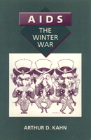

A powerful study of efforts to bring new drugs for AIDS to U.S. markets
A powerful study of efforts to bring new drugs for AIDS to U.S. markets


 A powerful study of efforts to bring new drugs for AIDS to U.S. markets
A powerful study of efforts to bring new drugs for AIDS to U.S. markets

|  |
AIDS, The Winter WarArthur D. Kahncloth EAN: 978-1-56639-018-7 (ISBN: 1-56639-018-4) |
"The most complete history of how AIDS treatment activism began—and an appalling look at the government AIDS mismanagement."
—John S. James, AIDS Treatment News
Arthur Kahn traces the history of the struggle for recognition of and action on behalf of the AIDS epidemic. He describes the heroic struggle for survival by persons with AIDS and their allies for survival. He documents the sophisticated and effective mobilization of AIDS activists in the face of apathy from the Reagan and Bush administrations.
Kahn presents a case study of the difficulties involved in bringing new drugs for AIDS to U.S. markets. He outlines the frustrating attempts to promote egg lecithin as the potential medicine for HIV patients after its use showed some signs of success in Israel. Obstruction by the federal bureaucracy, greed and incompetence on the part of the drug industry, stonewalling by scientific mandarins, and impediments to evaluation testing—these are shown to be the cruel realities faces by patients and activists.
After setting this background, Kahn details the work of President Reagan's commission on AIDS. Although news of the establishment of this committee was met with scorn and cynicism, the results of its study were both effective and humane. Led by Admiral James Watkins, whose sensitivity won the respect of both commissions members and gay activists, the Commission on the Human Immunodeficiency Virus (HIV) Epidemic issued a final report that seriously addressed the ramifications of the epidemic for American society as a whole.
"In persuasive detail...Kahn demonstrates [that] the struggle against AIDS requires a continuous fight against vested interests that have little regard for alternative ideas and against egotists who put self-aggrandizement above a worldwide crisis.... Arthur Kahn's book presents the history of the clinical struggle and identifies heroes, many of whom have died fighting for all of us. Their efforts must be recognized. Their struggle is not over."
—William Regelson, M.D., Professor, College of Medicine, Virginia Commonwealth University (from the Introduction)
Preface
Introduction – William Regelson, M.D.
Part I
1. "The Mob" Fights Back
2. Two Therapies, Two FDA-NIH Approaches
3. PWAs Undertake AIDS Research
4. "The Israeli Conspiracy"
5. First PWA Initiatives with AL721
6. Who Will Supply AL721 to the PWAs?
7. AIDS Activists Take on FDA and NIH
8. The PWAs Take Over
9. Ethigen at Bay
Part II
10. Mr. Reagan Appoints a Commission
11. First Steps in the Education of the Commission
12. What the Commission Learned in New York City
13. The Commission's Preliminary Report
14. The Crisis in Health Care Services
15. FDA and NIH at Bay
16. AIDS and the Social Crisis
17. The Report of the Presidential Commission
18. The President Receives His Commission's Report
19. Aftermath
20. Winter Soldiers
Index
Arthur D. Kahn, now retired, was chairman of the Classics Department at Brock University in Ontario. He has taught at the State University of New York at Buffalo, New York University, the College Year at Athens, and has held the O'Connor Chair at Colgate University. He has published several other books, including The Education of Julius Caesar.
General Interest
Sexuality Studies/Sexual Identity
© 2015 Temple University. All Rights Reserved. This page: http://www.temple.edu/tempress/titles/847_reg.html.